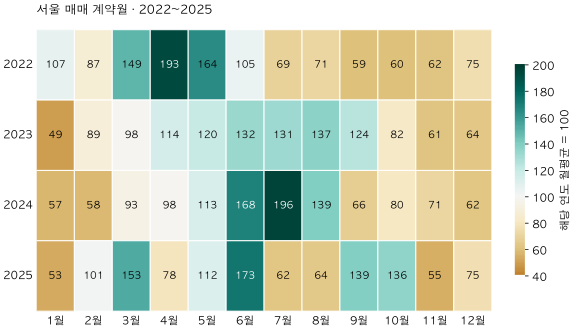

서울 아파트 · 실거래 데이터 노트
이사철이면 아파트 거래가 늘까? 서울의 네 해 달력 비교
서울 아파트 2022~2025년 매매계약을 월별로 비교합니다. 연도별 규모와 월 길이를 맞추고, 평균·해별 범위로 이사철과 매수 적기를 구분합니다.
분석 기간 · 2022~2025년 계약 · 네 완결 연도 | 보유 자료 스냅샷 생성 · 2026-10-04
“봄·가을 이사철이면 아파트 거래가 늘어난다.” 익숙한 말이지만, 매매 계약 자료에서 같은 패턴이 해마다 반복되는지는 따로 확인해야 합니다. 서울의 2022~2025년을 한 해씩 나누어 보니, 거래가 가장 많았던 달은 4월·8월·7월·6월로 달랐습니다.
먼저, 이 자료에는 이사한 날짜가 없습니다
국토교통부 실거래 FAQ에 따르면 공개 실거래 자료는 계약일 기준입니다. 신고일 기준 주택거래통계와도 다릅니다. 이 글은 아파트 매매계약이 체결된 달을 셉니다. 입주·잔금·이사 날짜나 실제 이사한 가구 수는 세지 않았고, 전월세도 포함하지 않았습니다.
대상은 서울 25개 구, 2022~2025년 전체 전용면적의 정제 매매계약입니다. 네 해는 매매 거래유형 공개 이후의 완결 연도라서 같은 제외 규칙을 적용할 수 있습니다. 2026년은 보유 자료가 9월까지이므로 제외했습니다. 일부 달만 있는 해를 넣으면 그 해의 월평균 기준 자체가 달라집니다.
2022년 9,675건과 2025년 69,280건을 어떻게 비교할까요?
| 연도 | 연간 건수 | 최다 월 | 그달 건수 | 상대 활동 |
|---|---|---|---|---|
| 2022 | 9,675 | 4월 | 1,555 | 192.9 |
| 2023 | 30,827 | 8월 | 3,510 | 136.6 |
| 2024 | 51,015 | 7월 | 8,314 | 195.6 |
| 2025 | 69,280 | 6월 | 9,966 | 172.6 |
그냥 네 해의 3월 건수를 합치면 거래가 많았던 해가 더 크게 반영됩니다. 여기서는 먼저 각 해의 월평균을 100으로 놓고 월별 건수를 비교한 뒤, 같은 달의 네 숫자를 똑같은 비중으로 평균했습니다.
월별 상대 활동 = 그달 계약 건수 ÷ (그해 총계약 건수 ÷ 12) × 100. 2022년 월평균은 9,675 ÷ 12 = 806.25건입니다. 그해 4월 1,555건을 나누면 약 192.9가 됩니다. 100보다 크면 그해 월평균보다 많고, 작으면 적다는 뜻입니다. 전년 동월 대비 증가율이나 가격지수가 아닙니다.
해마다 같은 비중을 주는 것도 선택입니다. 거래가 적었던 2022년의 월별 움직임이 거래가 많았던 2025년과 같은 한 표를 갖습니다. 실제 네 해 전체의 거래가 어느 달에 가장 많이 몰렸는지를 묻는다면 건수를 합치는 방식이 맞습니다. 이 글의 질문은 해마다 상대적으로 활발했던 달이 반복되는가입니다.
6월은 네 해 모두 평균보다 많았지만, 가을은 일정하지 않았습니다

| 월 | 평균 활동 | 해별 범위 | 100 초과 연도 | 일수 보정 평균 |
|---|---|---|---|---|
| 1월 | 66.3 | 49.2~106.7 | 1/4 | 65.1 |
| 2월 | 83.7 | 57.6~101.3 | 1/4 | 90.5 |
| 3월 | 123.3 | 93.5~152.6 | 2/4 | 121.1 |
| 4월 | 120.6 | 78.4~192.9 | 2/4 | 122.3 |
| 5월 | 127.2 | 111.7~164.2 | 4/4 | 124.9 |
| 6월 | 144.3 | 104.9~172.6 | 4/4 | 146.4 |
| 7월 | 114.5 | 62.5~195.6 | 2/4 | 112.5 |
| 8월 | 102.7 | 64.1~139.3 | 2/4 | 100.9 |
| 9월 | 97.0 | 59.4~138.7 | 2/4 | 98.4 |
| 10월 | 89.4 | 59.9~135.6 | 1/4 | 87.8 |
| 11월 | 62.1 | 54.8~70.7 | 0/4 | 63.0 |
| 12월 | 68.9 | 62.2~75.0 | 0/4 | 67.6 |
6월의 평균 활동은 144.3, 해별 범위는 104.9~172.6이었습니다. 5월도 네 해 모두 각 해의 평균을 넘었습니다. 반면 3월과 4월은 평균 활동이 100보다 높아도, 개별 연도에서는 각각 두 해만 100을 넘었습니다. 평균이 높은 것과 매년 높았던 것은 다릅니다.
9월의 평균은 97.0이지만 해별로 59.4~138.7까지 벌어졌습니다. ‘가을이면 늘 거래가 많다’고 요약하기 어렵습니다. 7월 역시 평균 114.5에 비해 범위가 62.5~195.6으로 넓습니다. 해마다 같은 달을 골라 기다리는 판단에는 평균만으로 설명되지 않는 차이가 남습니다.
2월은 짧아서 불리한 것 아닐까요?
맞습니다. 28일인 달과 31일인 달의 건수에는 관측 일수 차이가 있습니다. 그래서 그달 하루 평균 건수 ÷ 그해 하루 평균 건수 × 100도 계산했습니다. 윤년인 2024년은 연간 366일과 2월 29일을 사용했습니다. 위 표의 마지막 열입니다.
2월은 83.7에서 90.5로 높아졌고, 6월은 144.3에서 146.4가 됐습니다. 월 길이를 맞춰도 6월이 가장 높은 평균이라는 결과는 유지됐습니다. 그러나 이 보정은 달력의 일수만 맞춘 것입니다. 평일·주말, 이동하는 명절, 규제 변화, 금리와 시장 국면까지 통제한 계절조정은 아닙니다.
네 해 모두 같은 방향이면 계절성이라고 결론 내려도 될까요?
반복이 있다는 관측은 남길 수 있습니다. 다만 네 해는 길지 않고, 한 해 안에서도 시장의 상승·하락이나 거래 제약이 특정 시기에 몰릴 수 있습니다. 여러 달을 살펴본 뒤 눈에 띄는 달을 고른 점도 고려해야 합니다. 네 번의 같은 방향을 미래에도 지속될 확률로 바꾸지 않았습니다.
한 해씩 빼고 다시 계산하면 결과가 얼마나 단단한지도 확인할 수 있습니다. 네 해 가운데 6월의 상대 활동이 가장 높았던 2025년(172.6)을 빼면 6월 평균은 134.9, 4월은 134.7, 5월은 132.3로 거의 같아집니다. 2025년 6월은 6·27 대책 직전으로 그해 계약금액이 가장 컸던 달입니다. ‘6월이 가장 높다’는 순위는 한 해의 정책 일정에도 기대고 있으므로, 순위 하나보다 5월과 6월이 네 해 모두 각 해의 평균을 넘었다는 관측을 더 무겁게 읽는 편이 안전합니다.
미국 Census의 설명은 시계열에서 추세·계절·불규칙 변동을 구분합니다. 여기서는 연간 규모와 달 길이만 맞췄습니다. 이 결과를 공식 계절조정 통계나 ‘이사철이 거래를 늘린 효과’라고 부르지 않습니다. 따로 가격을 분석하지 않았으므로 거래가 적은 달이 더 싸다는 결론도 나오지 않습니다.
이 표를 최근 거래 기사에 어떻게 활용할까요?
- 날짜의 종류를 확인합니다. 계약월·신고월·이사월 중 무엇을 셌는지 봅니다.
- 최근 월의 반영 정도를 확인합니다. 새 신고가 더해질 수 있으므로 신고 지연과 집계 시점을 먼저 점검합니다.
- 전월뿐 아니라 전년 같은 달도 봅니다. 계절 차이를 줄이는 보조 비교지만, 전년의 정책·국면과 같은 조건을 보장하지는 않습니다.
- 최근 변화가 남으면 남는 대로 읽습니다. 계절성이라는 말로 실제 거래 감소를 지우거나, 평균적인 배수를 곱해 미반영 건수를 만들어내지 않습니다.
- 가격 질문은 별도로 확인합니다. 같은 단지·면적·층 등의 거래 근거와 현재 후보 조건을 비교합니다.
서울 매매에서는 달별 활동의 차이가 보였고, 그 차이의 크기는 해마다 달랐습니다. 이사철이라는 이름보다 계약 건수·기준 연도·해별 범위를 함께 읽으면 계절 이야기와 현재 시장의 변화를 섞을 가능성을 줄일 수 있습니다.
48개월의 원 집계와 계산 범위
국토부 아파트 매매 실거래 상세 자료의 정제 계약에 strict·비토지임대부 조건을 적용했습니다. 2022~2025년 48개월이 모두 있으며 합계는 160,797건입니다. 전체 면적의 거래 활동을 대상으로 하며, 프로젝트의 별도 계절성 가격모형에서 쓰는 비교평형·층·고정효과 표본과 같지 않습니다. 가격모형·STL·X-13을 새로 실행하지 않았습니다.
스냅샷 생성일 2026-10-04, 참조 종료월 2026-09. 과거 계약을 현재 보유 자료에서 다시 센 결과이며 당시 이용 가능한 정보의 빈티지는 아닙니다. 월별 건수를 별도의 정제 fact·마스터 집계와 대조했고, 2025년은 기존 서울 공개 집계와도 일치했습니다. 최소 월 건수는 479건입니다. 원본 행이나 단지 식별자는 공개하지 않습니다. 공개 집계 JSON의 반올림 전 값으로 모든 표를 계산합니다.
| 계약월 | 건수 | 상대 활동 |
|---|---|---|
| 2022-01 | 860 | 106.7 |
| 2022-02 | 705 | 87.4 |
| 2022-03 | 1,202 | 149.1 |
| 2022-04 | 1,555 | 192.9 |
| 2022-05 | 1,324 | 164.2 |
| 2022-06 | 846 | 104.9 |
| 2022-07 | 553 | 68.6 |
| 2022-08 | 570 | 70.7 |
| 2022-09 | 479 | 59.4 |
| 2022-10 | 483 | 59.9 |
| 2022-11 | 496 | 61.5 |
| 2022-12 | 602 | 74.7 |
| 2023-01 | 1,265 | 49.2 |
| 2023-02 | 2,276 | 88.6 |
| 2023-03 | 2,523 | 98.2 |
| 2023-04 | 2,917 | 113.5 |
| 2023-05 | 3,079 | 119.9 |
| 2023-06 | 3,395 | 132.2 |
| 2023-07 | 3,376 | 131.4 |
| 2023-08 | 3,510 | 136.6 |
| 2023-09 | 3,175 | 123.6 |
| 2023-10 | 2,101 | 81.8 |
| 2023-11 | 1,578 | 61.4 |
| 2023-12 | 1,632 | 63.5 |
| 2024-01 | 2,403 | 56.5 |
| 2024-02 | 2,448 | 57.6 |
| 2024-03 | 3,974 | 93.5 |
| 2024-04 | 4,150 | 97.6 |
| 2024-05 | 4,801 | 112.9 |
| 2024-06 | 7,121 | 167.5 |
| 2024-07 | 8,314 | 195.6 |
| 2024-08 | 5,924 | 139.3 |
| 2024-09 | 2,814 | 66.2 |
| 2024-10 | 3,416 | 80.4 |
| 2024-11 | 3,004 | 70.7 |
| 2024-12 | 2,646 | 62.2 |
| 2025-01 | 3,040 | 52.7 |
| 2025-02 | 5,848 | 101.3 |
| 2025-03 | 8,811 | 152.6 |
| 2025-04 | 4,524 | 78.4 |
| 2025-05 | 6,449 | 111.7 |
| 2025-06 | 9,966 | 172.6 |
| 2025-07 | 3,608 | 62.5 |
| 2025-08 | 3,703 | 64.1 |
| 2025-09 | 8,008 | 138.7 |
| 2025-10 | 7,829 | 135.6 |
| 2025-11 | 3,163 | 54.8 |
| 2025-12 | 4,331 | 75.0 |
분석·집필: 파파펭귄 (Nobot Kang). 에이전트로 근거 대조·계산·초안 검토를 보조했습니다. 공식 안내 확인일: 2026-10-09.